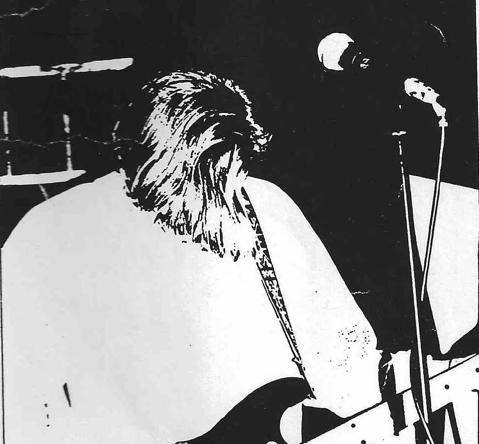

I had my senior pictures taken holding onto my guitar, even though I'm pretty sure a good number of my friends didn't know I played guitar. It was a Hondo. I had started playing about a year before that, thinking somehow that after a few weeks of lessons I'd try out for the Meridian High School jazz band and oust John Cafferty, the band's current guitar player. Not THE John Cafferty mind you, but the John Cafferty that is now a judge up in Kootenei County. Anyway, when I told my girlfriend about my plans, she said that John brought his guitar to speech class one day and played "Spanish Fly" note for note. I was only half way through the first Matteo Carcassi book. My first setback.
Five Speed Jesus existed for some time before I joined. I don't know anything about the before times, and there isn't much to say about what I was doing musically before that. Five Speed Jesus was my first real band. Yes, there was the Jangletards, featuring John Harmon and Bill Carrico. Not THE John Harmon mind you, but yes it was THE Bill Carrico that later became a Boise comedian and DJ and started spelling his name with a "y". The Jangletards played one gig at party at Byl's house. It was bad. Also, I joined professor George Thomason's jazz guitar ensemble at BSU in my freshman year. That is where I met Marc.
Jazz ensemble is where they put the rejects that didn't participate in some kind of high school music program, can't read music, and can't play an honest instrument honestly. We did standards like Ain't Misbehavin and songs that sounded like the chords from Thank you Boys by Jane's Addition. The ensemble did free gigs at Noodles Pizza. Students played rhythm and professor Thomason took the lead. Sometimes we were encouraged to improvise and take solos. I don't recall ever taking a solo outside of class. Marc did solos, and one day Marc noticed a Camper Van Beethoven cassette in my guitar case and asked me after class if I was interested in joining his band Five Speed Jesus.
There was an audition, that was weird. I thought people just decided to make bands and that was it. So, I went to the audition at a tiny house on 1108 W. Lee Street. I was wearing OP shorts and boat shoes. The walls were covered in sagebrush and unearthed bones. There were more bones boiling on the back porch. We ran through some songs: Diane, The KKK Took my Baby Away, Sweet Jane and some originals they were working on. It was clearly a very a big deal that I'd never even heard Diane and KKK before. I sat out on the stoop while they decided. I'm told the vote was two to one and I was in. We had a full practice after that.
We weren't that good, but Forest and Andy made a solid rhythm section, and you can get away with a lot with that. There were only about a dozen songs, for long sets we'd just play songs twice at different speeds. We got more shows than we deserved, mostly because Andy was Andy. There was a guy in town, Todd Dunnigan, who was putting together a local bands compiliation, a la Inside Out, to be called Smallpond. Somehow we were invited to have a slot on that, after only being a band for three months and none of us were involved in scene in any way before that.
The Smallpond compilation was mostly live, recorded over a three day period in April 1990 at a Boise venue called the Zoo. Each band did a short set, and Todd picked the best song from the set to put on the complilation. For us, he chose a song called Everything, a cover song written by Andy's former (Farm Days) and future (Built to Spill) bandmate Brett Nelson. Andy didn't want this on the compilation. We didn't write it, and he was embarrassed that he had inexplicably yelled "Five Speed Jesus" during one of the transitions. It was endearing but I can see why he didn't like hearing it back.
See that dog over there?
The one with the smoking hair...
The Lee street landlord banned band practice, so we moved to Marc's parents house, then to my parents basement. My mom made us cookies. Marc did a standing backflip, with his guitar, in the yard. Andy and Forest smoked with my dad on the back patio. My dad said he liked the song Falling Down.

Andy Capps 1969-2006
Marc Frisk 1970-2011
Forrest Orr/McKinley 1969-2024
Trent McNair 1970-
{kind=link}
{kind=link}